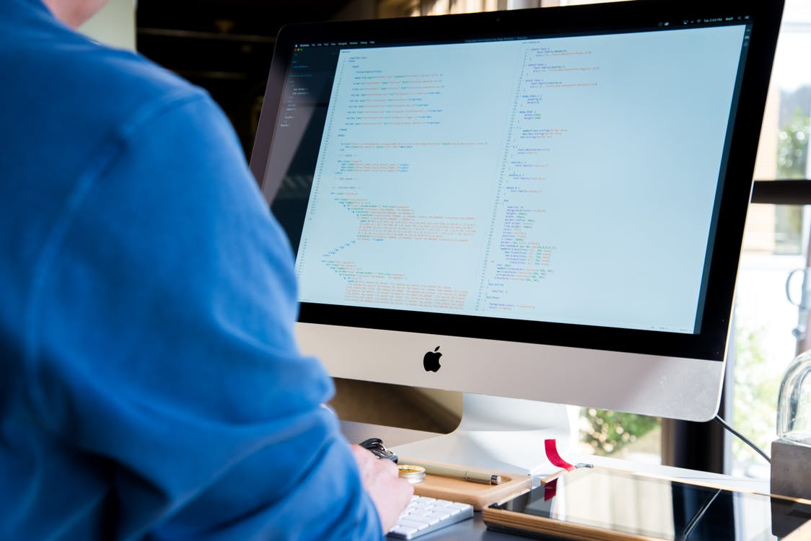

Intro
Building state-of-the-art, easy to use, user-friendly websites and applications is truly a passion of mine. In addition to my knowledge base, I actively seek out new technologies and stay up-to-date on industry trends and advancements. This has allowed me to stay ahead of the curve and deliver exceptional work to all of my employers, including those I've worked for on a project basis.
Key Skills
Respected Full-Stack Web Developer with 14-plus years of experience in collaborating with creative and development teams on the execution of ideas and projects.
- Promoting and communicating new ideas
- Creating process improvements
- Instituting new technologies
- Writing maintainable cross-browser code
- Ensuring code is scalable and responsive

Year
2014-2019
2007-2014
2005-2007
Title
Senior Full-Stack Web Developer
Front-End Web Developer
Junior Front-End Web Developer
Company
Flooz
Kozmo
Netscape
Software Used
CSS, JS, Python, Node, JS, PHP
DOM, JS, XML, HTML, CSS
CSS, HTML, JS